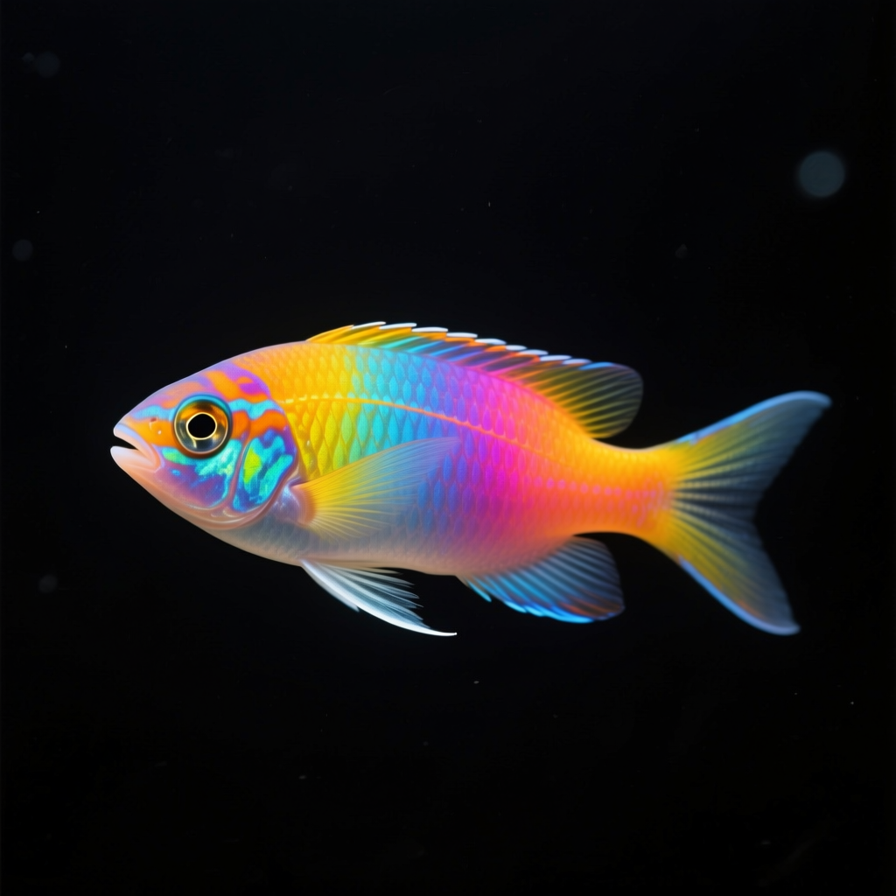
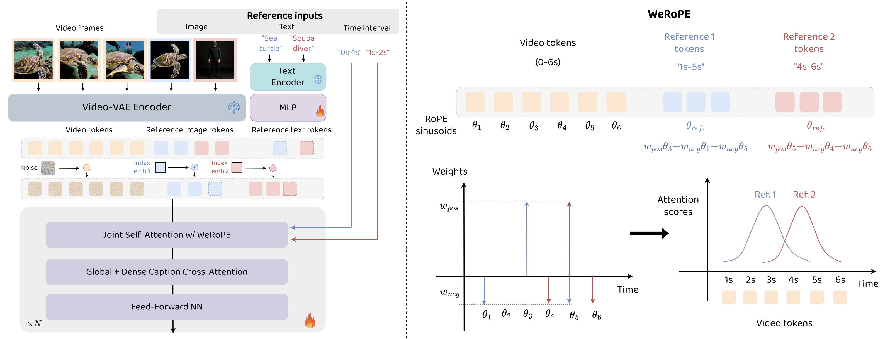

AlcheMinT: Fine-grained Temporal Control for Multi-Reference Consistent Video Generation
AlcheMinT enables customized text-to-video generation with input reference conditions as well as corresponding timestamp intervals controlling when references appear in the generated video.

3.3s - 5.2sAbstract
Recent advances in subject-driven video generation with large diffusion models have enabled personalized content synthesis conditioned on user-provided subjects. However, existing methods lack fine-grained temporal control over subject appearance and disappearance, which are essential for applications such as compositional video synthesis, storyboarding, and controllable animation. We propose AlcheMinT, a unified framework that introduces explicit timestamps conditioning for subject-driven video generation. Our approach introduces a novel positional encoding mechanism that unlocks the encoding of temporal intervals, associated in our case with subject identities, while seamlessly integrating with the pretrained video generation model positional embeddings. Additionally, we incorporate subject-descriptive text tokens to strengthen binding between visual identity and video captions, mitigating ambiguity during generation. Through token-wise concatenation, AlcheMinT avoids any additional cross-attention modules and incurs negligible parameter overhead. We establish a benchmark evaluating multiple subject identity preservation, video fidelity, and temporal adherence. Experimental results demonstrate that AlcheMinT achieves visual quality matching state-of-the-art video personalization methods, while, for the first time, enabling precise temporal control over multi-subject generation within videos.
Timestep-Controlled Multi Reference Video Generation
Our framework allows for multiple reference conditions as well, with independent input temporal intervals which may or may not overlap. Yellow boxes represent the first reference, and red boxes represent the second reference.
Single-Reference Video Generation
We generalize to the standard task of single-reference video generation by providing timestamps which span the entire duration of the video. AlcheMinT obtains high fidelity subject-consistent videos for a wide variety of reference images.
Multi Reference Video Generation
Our framework allows multiple reference conditions with different combinations of subjects, objects generating videos with complex interactions as provided by the text prompt.
Method
Our approach introduces a novel temporal conditioning mechanism for subject-driven video generation. We encode reference images and their corresponding temporal intervals using a unified framework that seamlessly integrates with pretrained video diffusion models. The key innovation lies in our RoPE-based positional encoding that captures per-subject appearance intervals, enabling precise control over when each reference appears in the generated video.

BibTeX
@misc{girish2025alchemintfinegrainedtemporalcontrol,
title={AlcheMinT: Fine-grained Temporal Control for Multi-Reference Consistent Video Generation},
author={Sharath Girish and Viacheslav Ivanov and Tsai-Shien Chen and Hao Chen and Aliaksandr Siarohin and Sergey Tulyakov},
year={2025},
eprint={2512.10943},
archivePrefix={arXiv},
primaryClass={cs.CV},
url={https://arxiv.org/abs/2512.10943},
}